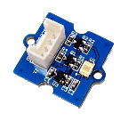
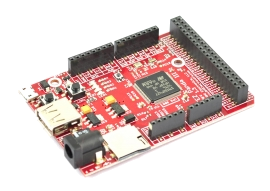

Sommaire
- LE MATERIEL
- Le circuit intégré TSL2561: LIGHT-TO-DIGITAL CONVERTER
- Les cartes Netduino
- Les cartes FEZ
- LE LOGICIEL
- LES FASCICULES
- La page du projet MicroToolsKit
1. LE MATERIEL
1.1 Le circuit intégré TSL2561: LIGHT-TO-DIGITAL CONVERTER
Le capteur TSL2561 mesure la luminosité ambiante de 0,1 à 40000 Lux. Il communique avec un microcontrôleur via un bus I²C.
Ce capteur couvre la lumière visible et les infrarouges grâce à deux diodes. Cela signifie que vous pouvez mesurer séparément la lumière infrarouge, la lumière visible ou le spectre complet.
- Alimentation: 2,7 à 3,6 Vcc
- Interface: I²C
- Plage de mesure: 0,1 à 40000 Lux
- Température de service: -30 à +80 °C
- Documentation: TSL2561 LIGHT-TO-DIGITAL CONVERTER
- Distributeur: Gotronic
Modules TSL2561
| Adafruit | Grove |
|  | |
| Documentation - Schéma | Documentation - Schéma |
{kind=link}
{kind=link}
1.2 Les cartes Netduino
Secret Labs
- Microcontrôleur : STM32F405RG 32 bits à architecture Cortex-M4 cadencé à 168 MHz.
- RAM : 164KB+.
- Flash : 1408KB.
- Port Ethernet : 10/100Mbps (Wifi:802.11b/g/n)*.
- E/S numériques : 22
- Entrées analogiques : 6
- Stockage: carte µSD
- IDE : Microsoft Visual Studio
- Framework : .NETMF 4.3
- Langages de programmation : C#, VB
- Compatibilité : shield Arduino, Gadgeteer

|

|
| Netduino 3 Ethernet | Netduino 3 wifi* |
- Sites à consulter : Netduino
- Distributeurs : Mouser Electronics
1.3 Les cartes FEZ
GHI Electonics (Extrait)
- Microcontrôleur : 180 MHz 32-bit ARM Cortex-M4.(120 MHz 32-bit ARM Cortex-M3 )*
- SoC(SoM)* : G80 G120*
- RAM : 156 KB(2.87 MB)*.
- Flash : 256 KB (13.67 MB)*.
- E/S numériques : 53(60)*
- Entrées analogiques : 16(8)*
- Réseaux : Ethernet TCP/IP, WiFi, and SSL.
- Stockage: carte µSD
- IDE : Microsoft Visual Studio
- Framework : .NETMF 4.3
- Langages de programmation : C#, VB
|  |

|
| PANDA III | COBRA III* (compatible Gadgeteer) |
- Sites à consulter : GHI ELECTRONICS
- Distributeurs : Mouser Electronics
2. LE LOGICIEL
2.1 Contenu du répertoire proposé au téléchargement
Le répertoire proposé au téléchargement (au format zip ou tar.gz) contient la solution NetduinoTSL2561 composée :
- Du projet TSL2561 : le code source de la classe TSL2561.
- Du projet TestTSL2561 : un exemple d'utilisation de cette classe.
2.2 Le NuGet MicroToolsKit
La dernière version compilée de la classe TSL2561 se situe dans la bibliothèque MicroToolsKit disponible sur nuget.org.

Organisation des classes contenues dans MicroToolsKit [lien]
Installer cette bibliothèque dans le projet simplifie l'utilisation de la classe.
2.3 Le wiki .NetMF v4.3
-
Un wiki est dédié au
microframework .Net v4.3. Il propose au téléchargement :
- Des exemples de code pour les cartes Netduino, GHI FEZ (Panda 3, BrainPad, etc.) . [lien]
2.4 Description et utilisation de la classe TSL2561
- Rôle: Contrôler un capteur TSL2561 via un bus I²C.
- Assembly: MicroToolsKit (disponible sur nuget.org)
- Espace de noms: Microtoolskit.Hardware.Sensors
Création d'un projet avec l'IDE Visual Studio
- Créer un nouveau projet en suivant la démarche décrite dans le chapitre "Premier programme en C# étape par étape" avec à une carte Netduino ou avec une carte Fez (Panda 3, BrainPad, etc.). [lien]
- Utiliser le gestionnaire de paquets NuGet pour ajouter l'assembly MicroToolsKit (disponible sur nuget.org) dans le répertoire Références du projet.(clic droit sur Références dans le gestionnaire de solutions de Visual Studio puis Gérer les packages NuGet...)
- Ajouter l'espace de noms Microtoolskit.Hardware.Sensors dans l'en-tête du fichier source.
- Créer un objet en utilisant un des constructeurs TSL2561.
- Initialiser le circuit avec la méthode Init et les paramètres appropriés.
- Lire la luminosité ambiante avec la méthode CalculateLux
Constructeurs
| Syntaxe | Description | |

|
TSL2561() | Instancie un objet "TSL2561".
Addresse SLA sur le bus I²C = 0x29. Fréquence du signal SCL = 100kHz. |
|
|
TSL2561( byte I2C_Add_7bits) | Instancie un objet "TSL2561".
I2C_Add_7bits: à définir en fonction de l'état de la broche d'adresse (GND)0x29, (VDD)0x49, (FLOAT)0x69. Fréquence du signal SCL = 100kHz. |
|
|
TSL2561( byte I2C_Add_7bits, UInt16 Frequency) | Instancie un objet "TSL2561".
I2C_Add_7bits: à définir en fonction de l'état de la broche d'adresse (GND)0x29, (VDD)0x49, (FLOAT)0x69. Fréquence du signal SCL: à définir dans l'intervalle [100kHz,400kHz]. |
Enumérations
| Syntaxe | Description | |

|
Gain | x1 : Fixe le gain à 1 (par défaut)
x16 : Fixe le gain à 16 |
|
|
IntegrationTime |
_13MS : 13,7ms (par défaut)
_101MS : 101ms _402MS : 402ms |
Propriétés
| Syntaxe | Description | |

|
Channel0 | Retourne un mot de 16 bits non signé représentatif de la lumière ambiante. |
|
|
Channel1 | Retourne un mot de 16 bits non signé représentatif des infrarouges. |
|
|
Control | Retourne la valeur contenue dans le registre "CONTROL". Octet non signé. |
|
|
id | Retourne la valeur contenue dans le registre "ID".
Octet non signé: - quartet de poids fort : (0)TSL2560 (1)TSL2561 - quartet de poids faible : valeur de l'identifiant du composant |
|
|
interrupt | Retourne une valeur représentative du réglage des interruptions. Octet non signé. |
|
|
threshhighhigh | Retourne ou fixe la valeur maximum du seuil haut de luminosité. Octet non signé. |
|
|
threshhighLow | Retourne ou fixe la valeur minimum du seuil haut de luminosité. Octet non signé. |
|
|
threshLowhigh | Retourne ou fixe la valeur maximum du seuil bas de luminosité. Octet non signé. |
|
|
threshLowLow | Retourne ou fixe la valeur minimum du seuil bas de luminosité. Octet non signé. |
|
|
timing | Retourne la valeur contenue dans le registre "TIMING". Octet non signé. |
Méthodes
| Syntaxe | Description | |
|
|
float CalculateLux() | Renvoi la mesure de la luminosité ambiante en Lux. |
|
|
void Dispose() | Libère le bus I²C. |
|
|
void Init() | Initialise le composant avec:
gain = 1 et integrationTime = 13ms |
|
|
void Init( Gain gain, IntegrationTime IT) | Les paramètres gain et IT peuvent être réglés avec les valeurs des énumérations ci-dessus. |